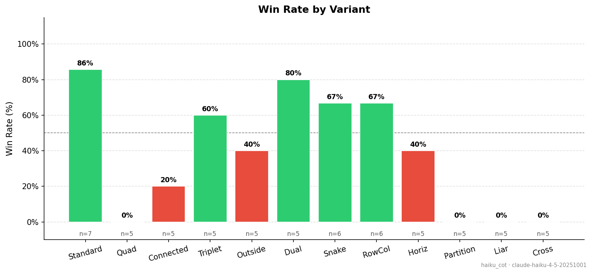
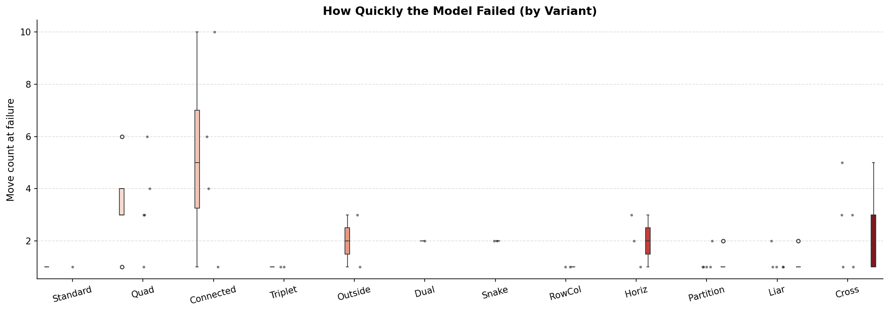
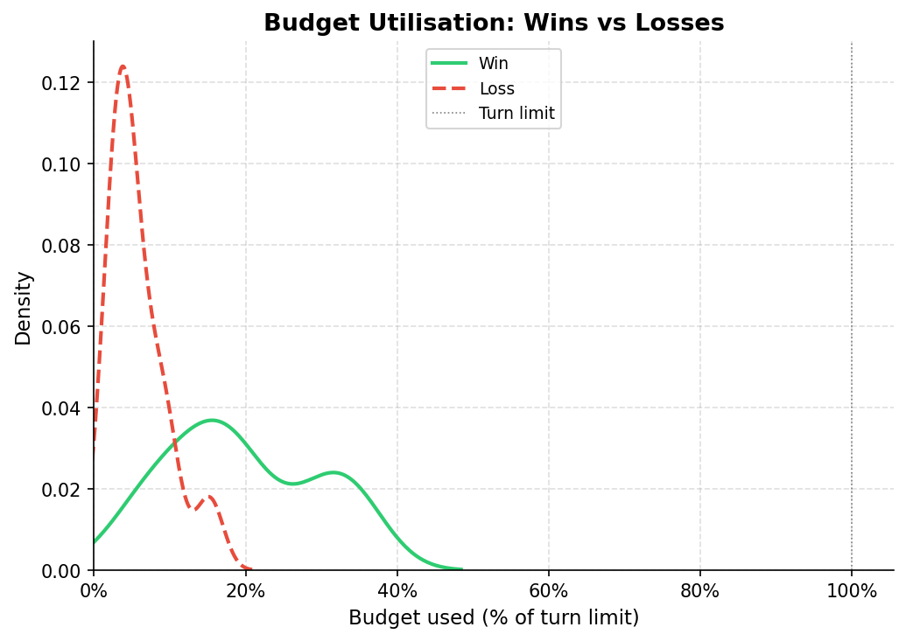
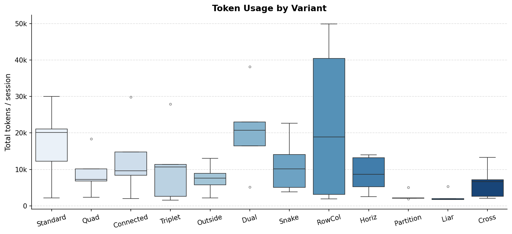
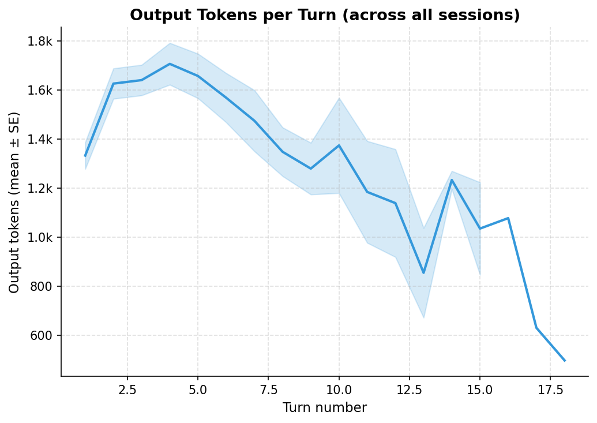
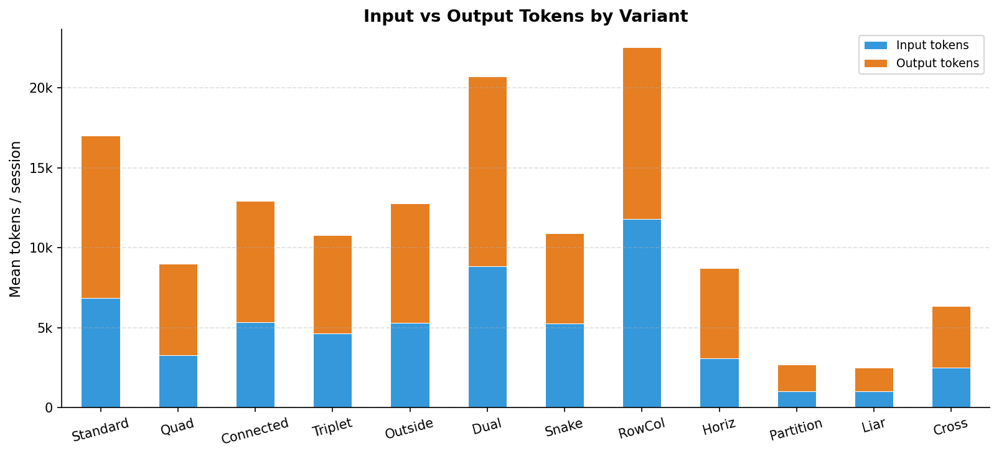
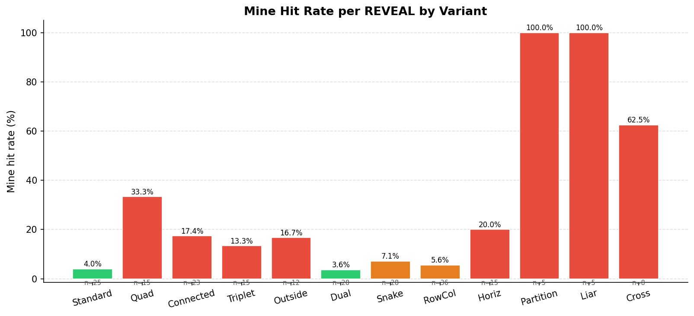
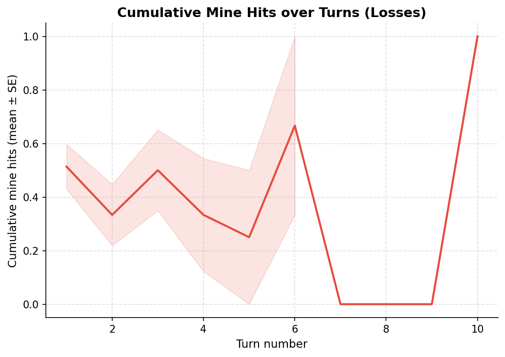
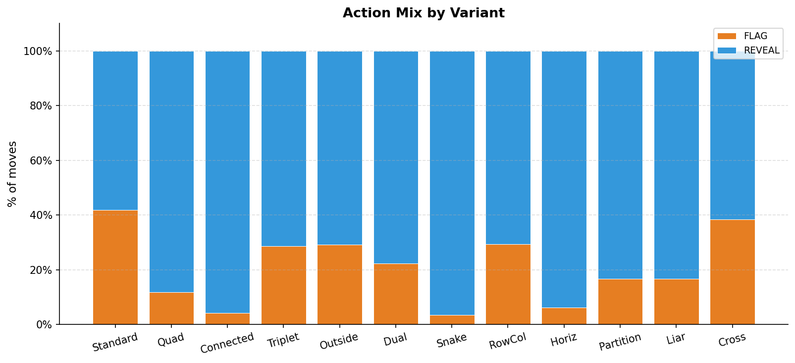
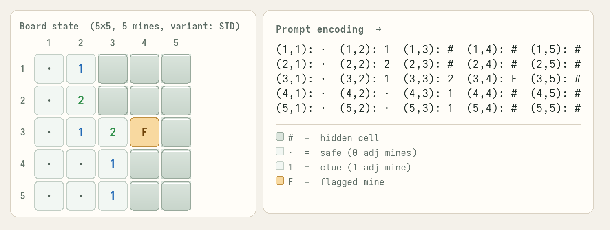

What it shows: The fraction of sessions the model won for each board variant, annotated with the percentage and sample size (n). Bars are green above 50% and red below.
Interpretation: Performance varies dramatically across variants. Standard and Dual are the easiest (86% and 80%), while Partition, Liar, and Cross produced 0% wins. The gradient roughly tracks variant complexity: variants that modify the *clue interpretation* (Liar, Partition, Cross) cause near-total failure, while structural constraints (Connected, Horiz, Outside) cause partial degradation. Snake and RowCol fall in the middle despite their unusual geometries, suggesting the model handles spatial constraints better than altered clue semantics.
---

What it shows: A violin plot (with embedded box-and-whisker and individual data points) of the move count at the time of loss, one violin per variant. Variants with 100% win rates are absent since they have no failures.
Interpretation: Most failures occur within the first 1–3 moves across all variants, indicating the model typically makes a decisive reasoning error early rather than degrading gradually. The Partition, Liar, and Cross violins are narrow and pinned near 1–2 moves — the model reveals a mine almost immediately, consistent with a fundamental misunderstanding of the variant rule. Connected and Outside show more spread and occasional outliers at 6–10 moves, suggesting the model sometimes engages partially before failing. The very low medians overall argue against the model "running out of time"; it fails fast.
---

What it shows: A kernel density estimate of how much of the turn budget each session consumed (move count ÷ turn limit), split by outcome. The turn limit is set to a multiple of the deterministic solver's move count for that puzzle.
Interpretation: Losing sessions cluster sharply at 5–10% of their budget, confirming that failures are abrupt and early. Winning sessions spread bimodally between roughly 10–40%, reflecting the varying difficulty of individual puzzles — some are solved quickly, others require most of the allotted turns. The negligible density of losses beyond 20% shows the model almost never survives long enough to exhaust its budget; losses are not a turn-limit artifact.
---

What it shows: A box plot of total tokens (input + output) consumed per session, one box per variant.
Interpretation: Token usage is a proxy for game length. Variants the model solves (Standard, Dual, RowCol) show high and variable usage because winning sessions run longer. Partition, Liar, and Cross have very low totals — the model hits a mine in the first 1–2 moves and the session ends. RowCol has the highest median and the widest spread (up to ~50k tokens), suggesting its puzzles require the most reasoning even when won. The strong correlation between token usage and win rate confirms that the model's difficulty is reflected in how much computation it actually gets to perform.
---

What it shows: The mean (± standard error) number of output tokens produced at each turn number, pooled across all sessions and variants.
Interpretation: Output tokens are highest on turn 1 (~1.8k) and drop to a plateau around 0.8–1.0k by turn 4 and beyond. This pattern is expected with extended thinking enabled: on the first turn the model reads and reasons over the full unseen board, producing a long chain-of-thought. Subsequent turns benefit from the action history in the prompt and the partially revealed board, reducing the reasoning burden. The declining trend is not a sign of deteriorating quality — it reflects the model needing to reason less as the board becomes more constrained.
---

What it shows: A stacked bar chart of mean input tokens (blue) and mean output tokens (orange) per session, broken down by variant.
Interpretation: Output tokens dominate for all variants, often by a factor of 2–4×. This is expected with extended thinking enabled, where the model's reasoning trace is counted in output tokens. Input tokens grow slowly across turns as the action history accumulates; output tokens are what varies. Dual and RowCol stand out with the highest output:input ratios, suggesting those variants elicit longer reasoning chains on average. Partition and Liar have negligible totals in both categories, again consistent with near-immediate failure.
---

What it shows: The fraction of REVEAL actions that hit a mine, per variant. Colors indicate severity: green < 5%, orange 5–10%, red > 10%. Sample sizes (n = number of REVEAL moves) are shown below each bar.
Interpretation: Standard (4%) and Dual (3.6%) have the lowest hit rates, reflecting genuine logical deduction. Partition (100%) and Liar (100%) are catastrophic — every single REVEAL attempt in those sessions hit a mine, meaning the model has no understanding of the variant's modified clue semantics and is effectively guessing at random or worse. Cross (62.5%) and Quad (33.3%) are also very high. The hit rate is a direct measure of decision quality: a perfect logic solver would have 0% hits, while random play on a 5×5 board with 5 mines would yield ~25%.
---

What it shows: The mean (± SE) cumulative number of mines hit as a function of turn number, restricted to losing sessions.
Interpretation: The curve starts around 0.5 at turn 1, meaning roughly half of all losing sessions hit a mine on their very first move. The curve stays below 1.0 throughout because most sessions end as soon as a mine is hit (the game is lost). The noisy, irregular shape at later turns is a sample-size artefact — very few sessions survive to turns 7+ before hitting a mine — so those data points have high variance. The overall message is that failure is concentrated at the earliest possible moment.
---

What it shows: The percentage of total moves that were REVEAL vs FLAG, stacked to 100%, for each variant.
Interpretation: REVEAL dominates across all variants (typically 70–95% of moves). Standard has the highest FLAG rate (~42%), consistent with it being the variant the model understands best - correctly identifying and marking mines before revealing safe cells. Variants the model fails on (Partition, Liar, Cross, Quad) show very low flagging, suggesting the model lacks confidence in mine identification under the modified rules and defaults to revealing. However, there is a third case apparent in this plot. Especially evident with snake, a variant with a reasonable winrate but very low FLAG rate, it seems that the model is able to do the logical deduction needed for winning without ever flagging mines. A high FLAG rate is not sufficient for success, but very low flagging in hard variants hints that the model cannot apply the variant-specific constraints well enough to commit to a flag.
